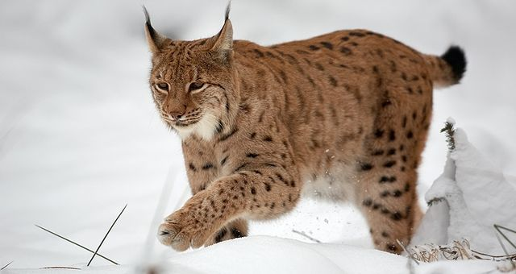
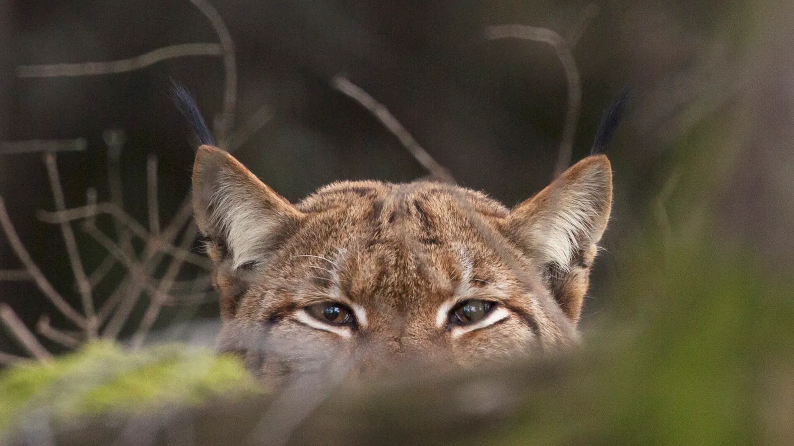

Lynx Rufus
Chat sauvage des régions boisées


- prédateur solitaire et furtif, paré d'un pelage tacheté et doté d'oreilles à touffes de poils, chassant avec une précision et une élégance silencieuse dans les forêts nordiques.
- Son pelage épais et ses longues oreilles surmontées de touffes de poils caractéristiques lui permettent de survivre dans des environnements froids et enneigés.
- Prédateur solitaire et discret, le lynx chasse principalement des petits mammifères comme les lièvres, les rongeurs et parfois de jeunes chevreuils, grâce à ses capacités de chasseur embuscade.
- Sa fourrure tachetée lui sert de camouflage parfait dans les sous-bois et les forêts, lui permettant de se fondre presque invisiblement dans son environnement naturel.
- le lynx possède une force et une agilité remarquables, lui permettant de bondir jusqu'à 4 mètres de distance pour capturer ses proies, malgré sa taille relativement modeste (entre 80 et 160 cm)